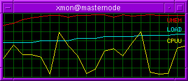
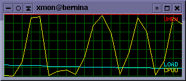
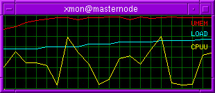
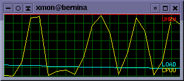

Abstract
Xmon is a very puristic, fast and
minimalistic lightweight system performance monitor for Linux,
purely written in C and linked only against glibc and X11/Xlib. No
additional heavyweight window manager bloat included, I kept it
lean.
It visualizes real-time system load, memory
usage, and CPU activity. The tool operates by reading data
directly from the Linux process filesystem (/proc), which must be
mounted for the application to function. Read the manpage to learn more about its full
functionality.
* CPU Usage [CPU]:
Total processor utilization (central parallel unit usage)
* Memory [MEM]:
Current RAM consumption (used memory)
* System Load [LOAD]:
Standard Linux load average (load average)
Xmon was originally developed in 1998 as a rainy-day
educational project to explore low-level Xlib programming in
depth.
As a result, the early codebase remained in a beta state for many
years, largely unoptimized and occasionally prone to bugs. Over
time, the most critical early issues were resolved, including
memory overflows and the need for periodic graph resets after a
fixed number of cycles.
With the release of version 1.0.0 in early 2026, Xmon has undergone a major modernization effort. The codebase has been significantly refactored and enhanced with new features to ensure compatibility with modern Linux kernels and contemporary X11 environments. It has been successfully tested on a recent Debian SID system (February 2026).
While Xmon is not natively portable to other Unix derivatives such as Solaris or AIX, it is designed to run on any hardwar platform supported by a full Linux environment, including architectures such as Sun SPARC and IBM RISC 6000.
The source code is released under the GNU
General Public License v3 in the hope that it proves useful to
others. If you encounter any bugs or issues, feedback is welcome.
Feedback welcome.
Installation
  
 
$Id: xmon.html,v 1.36 2026/02/24 09:13:31 gloor Exp $ |